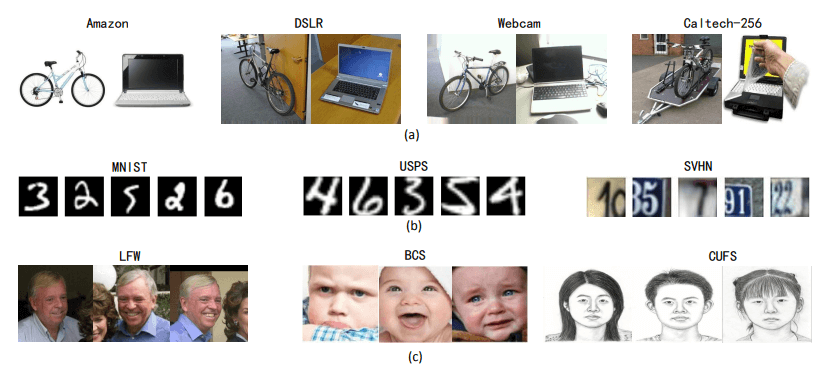
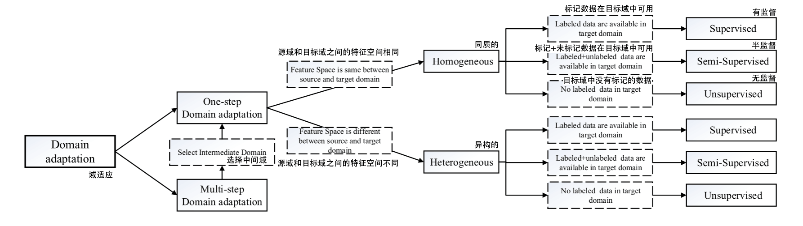
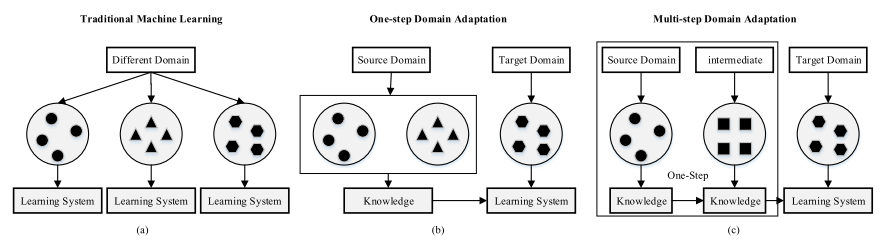
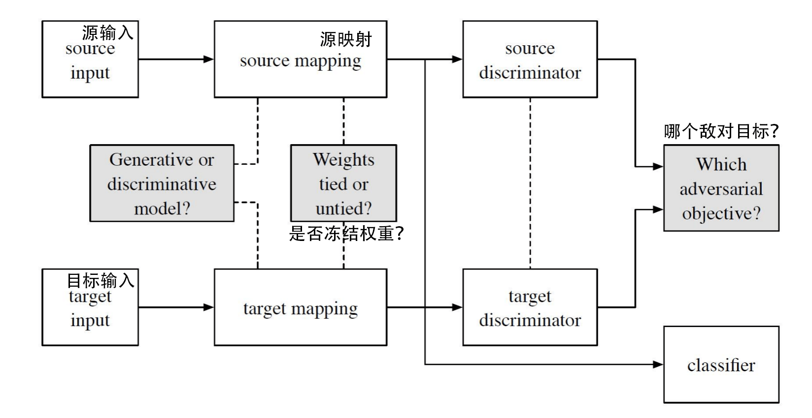
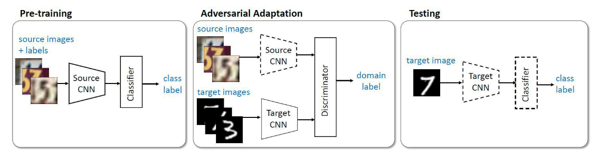

资源
- [1802.03601] Deep Visual Domain Adaptation: A Survey (arxiv.org)
- 【DA】Deep Visual Domain Adaptation: A Survey（持续更新 ing）-CSDN 博客
全文
Abstract
Domain Adaptation：
-
Deep domain adaptation
在深度学习的管道中嵌入域自适应来利用深度网络学习更多可转移的表示。
-
Embedding domain adaptation
已经有了全面的调查，但很少有及时的评论新兴的基于深度学习的方法。
调查深域适应的四个主要贡献：
- 根据定义两个域如何分叉的数据属性，提出了不同深度域适应方案的分类。
- 根据训练损失将深度域自适应方法归纳为几类，并简要分析和比较了这些类别下的最新方法。
- 概述了计算机视觉在图像分类之外的应用，如人脸识别，语义分割和目标检测。
- 目前的方法和未来的几个方向的一些潜在的不足之处突出。
I. INTRODUCTION
在过去的几年里，机器学习取得了巨大的成功，并使现实世界的应用受益匪浅。然而，为每个新任务和领域收集和注释数据集是非常昂贵和耗时的过程，可能并不总是有足够的训练数据。幸运的是，大数据时代为其他领域和任务提供了大量数据。例如，虽然公开的大规模标记视频数据库只包含少量样本，但从统计学上讲，YouTube 人脸数据集（YTF）由 3.4K 视频组成。标记的静止图像的数量是足够的。因此，在数据稀缺的情况下，熟练地使用当前任务的辅助数据将有助于实际应用。

(b) 一些数字图像来自 MNIST，USPS 和 SVHN 数据库。
(c) LFW、BCS 和 CUFS 数据库中的一些人脸图像。现实世界的计算机视觉应用，如人脸识别，必须学会适应每个领域特定的分布。
然而，由于许多因素（例如，照明、姿态和图像质量），在两个域之间总是存在可能使性能降级的分布变化或域移位。模仿人类视觉系统，域自适应（DA）是迁移学习（TL）的一种特殊情况，它利用一个或多个相关源域中的标记数据来执行目标域中的新任务。在过去的几十年中，已经提出了各种浅 DA 方法来解决源域和目标域之间的域移位。浅层 DA 的常见算法主要可以分为两类：基于实例的 DA 和基于特征的 DA。
-
第一类，通过重新加权源样本来减少差异，并在加权的源样本上进行训练。
-
第二类，通常学习公共共享空间，其中两个数据集的分布相匹配。
最近，基于神经网络的深度学习方法在视觉分类应用中取得了许多令人鼓舞的成果，例如图像分类，人脸识别和对象检测。模拟人类大脑的感知，深度网络可以通过多层非线性变换来表示高级抽象。
现有的深度网络架构包括卷积神经网络（CNN）深度信念网络（DBN）和堆栈自动编码器（SAE）等。尽管一些研究表明，深度网络可以学习更多可转移的表示，这些表示可以根据数据样本和分组特征与不变因素的相关性分层地解开数据样本和分组特征的探索性变化因素，但 Donahue 等人表明，域转移仍然会影响它们的性能。深层特征最终将从一般特征过渡到具体特征，并且表征的可传递性在更高的层中急剧下降。因此，最近的工作通过深度 DA 解决了这个问题，它结合了深度学习和 DA。
在过去的几年里，有其他关于 TL 和 DA 的调查。Pan 等人将 TL 分为三个子集，包括归纳 TL，转导 TL 和无监督 TL，但他们只研究了齐次特征空间。Shao 等人。将 TL 技术分为特征表示级知识转移和分类器级知识转移。Patel 撰写的调查仅关注目的语的一个子主题 DA 讨论了 38 种异构 TL 的方法，这些方法在不同的设置、需求和领域下运行。Zhang 等人首先从概念层面详细总结了几个转移标准。上述五项调查仅涵盖了浅层 TL 或 DA 的方法。Csurka 等人提出的工作简要分析了最先进的浅层 DA 方法，并根据训练损失将深层 DA 方法分为三个子集：分类损失，差异损失和对抗损失。然而，Csurka 的工作主要集中在浅层方法，它只讨论了深层 DA 在图像分类应用。
在本文中，我们将重点分析和讨论深度数据挖掘方法。具体来说，本调查的主要贡献如下：
- 我们根据定义两个领域如何分歧的数据属性，提出了不同深度 DA 场景的分类法。
- 我们扩展了 Csurka 的工作，改进并详细说明了三个子集（分类损失训练、差异损失训练和对抗损失训练），并总结了不同 DA 场景中使用的不同方法。
- 考虑到源域和目标域的距离，我们研究了多步骤 DA 方法，并将其分为手工机制、基于特征的机制和基于表征的机制。
- 我们对许多计算机视觉应用进行了调查，如图像分类、人脸识别、风格翻译、物体检测、语义分割和人物再识别。
本调查的其余部分结构如下。在第二节中，我们首先定义一些符号，然后将深度 DA 分类为不同的设置。在接下来的三个部分中，将针对每种设置讨论不同的方法，具体见表 I 和表 II。然后，在第六节中，我们介绍了一些成功的计算机视觉应用的深度 DA。最后，本文的结论和讨论未来的工作在第七节。
II. OVERVIEW
A. Notations and Definitions
在本节中，我们将介绍本调查中使用的一些术语和定义。这些术语和定义与文献[83]、[19]中的调查报告一致，以保持各调查报告的一致性。给定一个特定的领域 , 任务 由一个特征空间 和一个客观预测函数 f(·) 组成，从概率论的角度来看，f(·) 也可以看作是条件概率分布 。一般来说，我们可以从标注数据 （其中 和 ）中以有监督的方式学习 。
假设我们有两个域：具有足够标记数据的训练数据集是源域 \mathcal D^s =\{\mathcal X^s，P(X)^s\}，具有少量标记数据或没有标记数据的测试数据集是目标域 \mathcal D^t =\{\mathcal X^t，P(X)^t\}。
我们可以看到，部分标记部分 和未标记部分 构成了整个目标域，即 。每个域都有其任务：前者为 \mathcal T_s =\{\mathcal Y^s，P(Y^s|X^s)\}，后者为 \mathcal T^t = \{\mathcal Y^t，P(Y^t|X^t)\}。同样， 可以从源标签数据 中学习，而 可以从标签目标数据 和非标签数据 中学习。
B. Different Settings of Domain Adaptation
传统机器学习的情况是 和 。对于 TL，Pan 等人总结说，不同数据集之间的差异可能是由域分歧 引起的（即，分布偏移或特征空间差异）或任务分歧 （即，条件分布移位或标签空间差），或两者。基于这一总结，Pan 等人将 TL 分为三大类：诱导型 TL、转导型 TL 和无监督型 TL。
**根据这种分类，DA 方法是假设任务相同的转换 TL 解决方案，即，，并且差异仅由域发散引起，。**因此，DA 可以分为两个主要类别的基础上不同的领域分歧（分布偏移或特征空间差异）：同质和异构 DA。然后，我们可以进一步分为监督，半监督和无监督 DA 考虑标记的数据的目标域。

- 在齐次 DA（homogeneous DA）设置中，源域和目标域之间的特征空间是相同的 ，具有相同的维度 。因此，源数据集和目标数据集在数据分布方面通常是不同的 。
此外，我们可以进一步将其次 DA 设置分类为三种情况：
-
在监督 DA 中，存在少量标记的目标数据 。然而，标记的数据通常不足以完成任务。
-
在半监督 DA 中，目标域中的有限标记数据 和冗余未标记数据 在训练阶段都可用，这允许网络学习目标域的结构信息。
-
在无监督 DA 中，当训练网络时，没有标记但足够的未标记目标域数据 是可观察的。
在异构 DA 设置中，源域和目标域之间的特征空间是不等价的 ，并且维度通常也可能不同 。
所有上述 DA 设置都假设源域和目标域直接相关；因此，可以在一个步骤中完成知识转移。我们称之为一步 DA。然而，在现实中，这种假设偶尔是不可用的。两个域之间几乎没有重叠，执行一步 DA 将不会有效。幸运的是，有一些中间域能够使源域和目标域比它们原来的距离更近。因此，我们使用一系列中间桥来连接两个看似不相关的域，然后通过这个桥执行单步 DA，称为多步（或传递）DA。例如，面部图像和车辆图像由于形状或其他方面的不同而彼此不相似，因此，一步 DA 将失败。然而，一些中间图像，如“足球头盔”，可以被引入作为一个中间域，并具有平滑的知识转移。

III. APPROACHES OF DEEP DOMAIN ADAPTATION
从广义上讲，深度 DA 是一种利用深度网络来增强 DA 性能的方法。在此定义下，具有深度特征的浅层方法可以被视为深度 DA 方法。浅层方法采用 DA，而深层网络只提取向量特征，无助于直接传递知识。
例如，从 CNN 中提取卷积激活作为张量表示，然后进行张量对齐不变子空间学习来实现 DA。该方法可靠地优于当前基于传统手工特征的最先进方法，因为可以通过深度网络提取足够的代表性和可转移特征，从而可以更好地完成识别任务。
**从狭义上讲，深度 DA 基于为 DA 设计的深度学习架构，可以通过反向传播从深度网络获得第一手效果。直观的想法是将 DA 嵌入到学习表示的过程中，并学习语义上有意义且域不变的深度特征表示。**有了“好”的特征表示，目标任务的性能将得到显着改善。在本文中，我们专注于狭义定义，并讨论如何利用深度网络来学习具有额外训练标准的“好”特征表示。
A. Categorization of One-Step Domain Adaptation
| One-step DA Approaches | Brief Description | Subsettings |
|---|---|---|
| Discrepancy-based 基于差异 |
fine-tuning the deep network with labeled or unlabeled target data to diminish the domain shift 用标记或未标记的目标数据微调深度网络以减少域偏移 |
class criterion 等级标准、statistic criterion 统计标准、architecture criterion 结构标准、geometric criterion 几何标准 |
| Adversarial-based 基于对抗 |
using domain discriminators to encourage domain confusion through an adversarial objective 使用领域鉴别器通过对抗性目标来鼓励领域混淆 |
generative models 生成模型、non-generative models 非生成模型 |
| Reconstruction-based 基于重建 |
using the data reconstruction as an auxiliary task to ensure feature invariance 利用数据重建作为辅助任务，以确保特征不变性 |
encoder-decoder reconstruction 编解码器重构、adversarial reconstruction 对抗性重建 |
在一步 one-step DA 中，深层方法可以概括为三种情况，表显示了这三种情况和简要说明。第一种情况是基于差异的深度 DA 方法，它假设用标记或未标记的目标数据微调深度网络模型可以减少两个域之间的偏移。类准则、统计准则、体系结构准则和几何准则是进行微调的四种主要技术。
- Class Criterion: 使用类标签信息作为在不同领域之间转移知识的指南。当来自目标域的标记样本在监督 DA 中可用时，软标签和度量学习总是有效的。当这些样本不可用时，可以采用其他一些技术来替代类标记数据，例如伪标签和属性表示。
- Statistic Criterion: 使用某些机制对齐源域和目标域之间的统计分布偏移。最常用的比较和减少分布偏移的方法是最大平均差异（MMD），相关对齐（CORAL），KullbackLeibler（KL）发散和 发散等。
- Architecture Criterion: 旨在通过调整深度网络的架构来提高学习更多可转移特征的能力。被证明具有成本效益的技术包括自适应批归一化 (BN)、弱相关权重、域引导 dropout 等。
- Geometric Criterion：根据源域和目标域的几何属性将它们连接起来。该标准假设几何结构的关系可以减少域移位。
第二种情况可以称为基于对抗的深度 DA 方法。在这种情况下，对数据点是从源域还是从目标域提取进行分类的域分类器用于通过对抗性目标来鼓励域混淆，以最小化经验源映射分布和目标映射分布之间的距离。此外，基于对抗的深度 DA 方法可以根据是否存在生成模型分为两种情况。
-
Generative Models：联合收割机将判别模型与一般基于生成对抗网络（GAN）的生成组件相结合。典型的情况之一是使用源图像，噪声向量或两者来生成与目标样本相似的模拟样本，并保留源域的注释信息。
-
Non-Generative Models：特征提取器不是用输入图像分布生成模型，而是使用源域中的标签学习区别性表示，并通过域混淆损失将目标数据映射到相同的空间，从而产生域不变表示。
第三种情况可以被称为基于重建的 DA 方法，该方法假设源或目标样本的数据重建可以有助于提高 DA 的性能。重建器可以确保域内表示的特异性和域间表示的不变性。
- Encoder-Decoder Reconstruction：通过使用堆叠的自动编码器（SAE），编码器—解码器重构方法联合收割机将用于表示学习的编码器网络与用于数据重构的解码器网络相结合。
- Adversarial Reconstruction：重建误差通过经由 GAN 插值器获得的循环映射，如双 GAN、循环 GAN 和 disco GAN，测量为每个图像域内重建图像和原始图像之间的差异。
B. Categorization of Multi-Step Domain Adaptation
在多步 DA 中，我们首先确定与源域和目标域的直接连接相比，与源域和目标域更相关的中间域。第二，知识转移过程将执行之间的源，中间和目标域的一步 DA 与较少的信息损失。因此，多步 DA 的关键是如何选择和利用中间域；它可以分为三类：手工制作的，基于特征的和基于表示的选择机制。
- Hand-Crafted 手工制作：用户根据经验确定中间域。
- Instance-Based 基于实例：从辅助数据集中选择数据的某些部分来组成中间域以训练深度网络。
- Representation-Based 基于表示：通过冻结先前训练的网络并使用它们的中间表示作为新网络的输入来实现转移。
IV. ONE-STEP DOMAIN ADAPTATION
如第 II-A 节所述，目标域中的数据有三种类型，无论是同质还是异质 DA：
- 有标记数据的监督 DA。
- 有标记和无标记数据的半监督 DA
- 无标记数据的非监督 DA。
第二个设置可以通过设置 1 和设置 3 的方法相结合来完成，因此，本文只关注第一个和第三个设置。表 III 显示了主要用于每个 DA 设置的不同方法的情况。如图所示，更多的工作集中在无监督场景，因为监督 DA 有其局限性。当目标域中只有很少的标记数据可用时，使用源和目标标记数据来训练模型的参数通常会导致对源分布的过拟合。另外，基于差异的方法已经研究了多年，并在许多研究工作中产生了更多的方法，而基于对抗和基于重构的方法是一个相对较新的研究课题，但最近受到了更多的关注。
A. Homogeneous Domain Adaptation
- Discrepancy-Based Approaches 基于差异的方法
Yosinski 等人证明，由于脆弱的协同适应和表示特异性，深度网络学习的可转移特征具有局限性，并且微调可以提高泛化性能。微调（也可以看作是基于差异的深度 DA 方法）是用源数据训练基础网络，然后直接重用前 n 层来构建目标网络。目标网络的其余层是随机初始化的，并根据差异进行损失训练。在训练过程中，目标网络的前 n 层可以根据目标数据集的大小及其与源数据集的相似性进行微调或冻结。
- Class Criterion 类准则
类准则是深度 DA 中最基本的训练损失，在用源数据对网络进行预训练后，目标模型的剩余层使用类标签信息作为指导来训练网络。
- Statistic Criterion 统计标准
虽然一些基于差异的方法搜索伪标签，属性标签或其他替代标记的目标数据，更多的工作集中在学习领域不变的表示，通过最小化域分布差异无监督 DA。
- Architecture Criterion 架构标准
其他一些方法优化网络的结构，以最小化分布差异。这种自适应行为可以在大多数深度 DA 模型中实现，例如监督和无监督设置。
- Geometric Criterion 几何标准
几何准则减轻域转移整合中间子空间上的测地线路径从源到目标域。在格拉斯曼平面上构造一条连接源域和目标域的测地线流曲线。源子空间和目标子空间是格拉斯曼流形上的点。
- Adversarial-Based Approaches 基于对抗的方法
最近，GAN 方法取得了巨大的成功，该方法通过对抗过程来估计生成模型。GAN 由两个模型组成：生成模型 ，其提取数据分布；以及判别模型 ，其通过预测二进制标签来区分样本是来自 还是来自训练数据集。网络以最小-最大的方式训练标签预测损失：同时优化 以最小化损失，同时训练 以最大化分配正确标签的概率：
在 DA 中，这一原则被用来确保网络无法区分源域和目标域。提出了一个统一的框架 adversarial-based 方法，并总结了现有的方法，根据是否使用一个 generator，其中损失函数雇用，或是否共享权重跨域。在本文中，我们只将基于对抗的方法分为两个子集：生成模型和非生成模型。

- Generative Models 生成模型
带有真实注释的合成目标数据是解决缺乏训练数据问题的一个有吸引力的替代方案。首先，在源数据的帮助下，生成器呈现无限数量的合成目标数据，这些数据与合成源数据配对以共享标签，或者看起来好像它们是从目标域采样的，同时维护标签或其他内容。然后，使用带有标签的合成数据来训练目标模型，就好像不需要 DA 一样。具有生成模型的基于对抗性的方法能够基于 GAN 以无监督的方式学习这种转换。
- Non-Generative Models 非生成模型
深度 DA 的关键是从源样本和目标样本中学习域不变表示。通过这些表示，两个域的分布可以足够相似，使得分类器被愚弄并且可以直接用于目标域，即使它是在源样本上训练的。因此，表征是否存在领域混淆对知识传递至关重要。受 GAN 的启发，本文引入了域混淆损失来提高无生成器深度 DA 的性能。
域对抗神经网络（DANN）将梯度反转层（GRL）集成到标准架构中，以确保两个域上的特征分布相似。该网络由共享的特征提取层和两个分类器组成。DANN 最小化域混淆损失（对于所有样本）和标签预测损失（对于源样本），同时通过使用 GRL 最大化域混淆损失。与上述方法相比，对抗性判别域自适应（ADDA）通过解开权重来考虑独立的源和目标映射，目标模型的参数由预训练的源模型初始化。这是更灵活的，因为允许更多的领域特定的特征提取学习。ADDA 通过迭代地最小化以下函数来最小化源和目标表示距离，这与原始 GAN 最相似：
\operatorname*{min}_{D}\mathcal{L}_{advD}(X^{s},X^{t},M^{s},M^{t})=-\mathbb{E}_{(x^{s})\sim(X^{s})}[\log D(M^{s}(x^{s}))]-\mathbb{E}_{(x^{t})\sim(X^{t})}[\log(1-D(M^{t}(x^{t})))]
其中映射 和 是从源数据 和目标数据 学习的。 表示在源域上工作的分类器。通过使用标记的源数据训练源模型来优化第一分类损失函数 。第二个函数 被最小化以训练器，而第三个函数 正在学习域不变的表示。

- Reconstruction-Based Approaches 基于重建的方法
在 DA 中，源样本或目标样本的数据重建是一项辅助任务，它同时专注于在两个域之间创建共享表示并保持每个域的个体特征。
- Encoder-Decoder Reconstruction
基本的自动编码器框架是一个前馈神经网络，包括编码和解码过程。自动编码器首先将输入编码为某种隐藏表示，然后将此隐藏表示解码回重建版本。基于编码器-解码器重构的 DA 方法通常通过共享编码器来学习域不变表示，并通过源域和目标域中的重构损失来维护域特定表示。
- Adversarial Reconstruction
双重学习最早由 Xia 等人提出，以减少自然语言处理中对标记数据的需求。双重学习训练两个“相反”的语言翻译，例如，A 对 B 和 B 对 A。两个译者代表一个原始对偶对，它评估翻译句子属于目标语言的可能性，而闭环则衡量重建句子与原始句子之间的差异。受双重学习的启发，在双重 GAN 的帮助下，在深度 DA 中采用对抗重建。
- 混合方法：为了获得更好的性能，同时使用了上述方法中的一些。
B. Heterogeneous Domain Adaptation
- Discrepancy-Based Approach 基于差异的方法
在基于差异的方法中，网络通常在源域和目标域之间共享或重用前 n 层，这将输入的特征空间限制为相同的维度。然而，在异构 DA 中，源域的特征空间的维度可能不同于目标域的特征空间的维度。
- Adversarial-Based Approach 基于对抗的方法
利用生成模型可以在生成异构目标数据的同时，将源域的一些信息传递给目标数据。
- Reconstruction-Based Approach 基于重构的方法
对抗性重建也可以用于异构 DA。
V. MULTI-STEP DOMAIN ADAPTATION
对于多步 DA，中间域的选择是特定于问题的，并且不同的问题可能具有不同的策略。
A. Hand-Crafted Approaches
有时，中间域可以通过经验来选择，也就是说，它是预先决定的。例如，当源域是图像数据而目标域由文本数据组成时，一些带注释的图像将被清楚地抓取为中间域数据。
B. Instance-Based Approaches
在有许多候选中间域的其他问题中，应该考虑一些自动选择标准。
C. Representation-Based Approaches
基于表示的方法冻结先前训练的网络，并使用它们的中间表示作为新网络的输入。
VI. APPLICATION OF DEEP DOMAIN ADAPTATION
深度 DA 技术最近已经成功地应用于许多现实世界的应用中，包括图像分类、对象识别、人脸识别、对象检测、风格翻译等。在本节中，我们将展示使用各种视觉深度 DA 方法的不同应用示例。
A. Image Classification
由于图像分类是计算机视觉应用中的一项基本任务，因此上述大多数算法最初都是为了解决此类问题而提出的。
B. Face Recognition
当测试图像中存在训练图像中不存在的变化时，人脸识别的性能显著降低。数据集移位可以由姿势、分辨率、照明、表情和模态引起。
C. Object Detection
D. Semantic Segmentation
E. Image-to-Image Translation
F. Person Re-identification
G. Image Captioning
VII. CONCLUSION
从广义上讲，深度 DA 是利用深度网络来增强 DA 的性能，例如通过深度网络提取特征的浅层 DA 方法。
从狭义上讲，深度 DA 基于为 DA 设计的深度学习架构，并通过反向传播进行优化。
在这篇综述论文中，我们专注于这个狭义的定义，我们已经审查了深度 DA 技术的视觉分类任务。深度 DA 分为同质 DA 和异构 DA，并可以进一步分为监督，半监督和无监督设置。
第一种设置是最简单的，但由于需要标记数据，通常受到限制；因此，大多数以前的作品都集中在无监督的情况下。半监督深度 DA 是一种结合了监督和无监督设置方法的混合方法。此外，根据源域和目标域的距离，深度 DA 方法可以分为一步 DA 和多步 DA。当距离较小时，可以使用基于训练损失的一步 DA。它包括基于差异的方法、基于对抗的方法和基于重构的方法。当源域和目标域不直接相关时，可以使用多步（或传递）DA。多步 DA 的关键是选择和利用中间域，因此分为三种类型，包括手工制作，基于特征和基于表示的选择机制。
虽然深度 DA 最近取得了成功，但仍有许多问题有待解决。首先，大多数现有的算法都集中在同构的深度 DA 上，它假设源域和目标域之间的特征空间是相同的。然而，这种假设在许多应用中可能不成立。我们希望在没有这种严重限制的情况下转移知识，并利用现有的数据集来帮助完成更多的任务。异构深度 DA 在未来可能会吸引越来越多的关注。
此外，深度 DA 技术已成功应用于许多现实世界的应用，包括图像分类和风格翻译。我们还发现，只有少数论文涉及分类和识别之外的适应，如对象检测，人脸识别，语义分割和人员重新识别。如何在没有数据或数据量非常有限的情况下实现这些任务可能是深度 DA 在未来几年应该解决的主要挑战之一。
最后，由于现有的深度 DA 方法旨在对齐边缘分布，因此它们通常假设跨源和目标域的共享标签空间。然而，在现实场景中，源域和目标域的图像可能来自不同的类别集合，或者仅共享感兴趣的几个类别。近年来，一些文献开始关注这一问题，我们认为这一问题值得更多的关注。